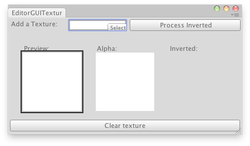

EditorGUIUtility.whiteTexture
public static Texture2D whiteTexture;
Description 描述
Get a white texture.

White texture in an Editor Window.
using System.Collections; using System.Collections.Generic; using UnityEngine; using UnityEditor;
public class EditorGUITextures : EditorWindow { Texture2D texture = null; static Texture2D invertedTexture; bool showInverted = false;
[MenuItem("Examples/Texture Previewer")] static void Init() { EditorGUITextures window = EditorWindow.GetWindowWithRect<EditorGUITextures>(new Rect(0, 0, 410, 250)); window.Show(); }
void OnGUI() { texture = (Texture2D)EditorGUI.ObjectField(new Rect(3, 3, 200, 50), "Add a Texture:", texture, typeof(Texture));
if (GUI.Button(new Rect(250, 3, 100, 20), "Process Inverted")) { if (invertedTexture) DestroyImmediate(invertedTexture);
//Copy the new texture invertedTexture = new Texture2D(texture.width, texture.height, texture.format, (texture.mipmapCount != 0));
for (int m = 0; m < texture.mipmapCount; m++) invertedTexture.SetPixels(texture.GetPixels(m), m);
InvertColors(); showInverted = true; }
if (texture) { EditorGUI.LabelField(new Rect(25, 200, 100, 25), new GUIContent("Preview:")); EditorGUI.DrawPreviewTexture(new Rect(25, 70, 100, 100), texture); EditorGUI.LabelField(new Rect(150, 200, 100, 25), new GUIContent("Alpha:")); EditorGUI.DrawTextureAlpha(new Rect(150, 70, 100, 100), texture); EditorGUI.LabelField(new Rect(275, 200, 100, 25), new GUIContent("Inverted:"));
if (showInverted) { EditorGUI.DrawPreviewTexture(new Rect(275, 70, 100, 100), invertedTexture); }
if (GUI.Button(new Rect(3, position.height - 25, position.width - 6, 20), "Clear texture")) { texture = EditorGUIUtility.whiteTexture; showInverted = false; } } else { EditorGUI.PrefixLabel( new Rect(3, position.height - 25, position.width - 6, 20), 0, new GUIContent("No texture found")); } }
static void InvertColors() { for (int m = 0; m < invertedTexture.mipmapCount; m++) { Color[] c = invertedTexture.GetPixels(m); for (int i = 0; i < c.Length; i++) { c[i].r = 1 - c[i].r; c[i].g = 1 - c[i].g; c[i].b = 1 - c[i].b; } invertedTexture.SetPixels(c, m); } invertedTexture.Apply(); }
void OnInspectorUpdate() { this.Repaint(); } }